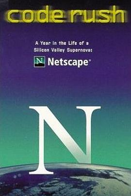
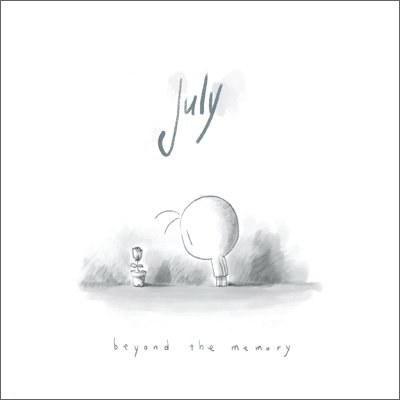

2015-02-23 14:17:01
豆瓣原页
看过 黑镜：圣诞特别篇 / Black Mirror: White Christmas ★★★★☆
Fucking High Technology!
2015-02-22 21:24:35
豆瓣原页
谈论 LIMBO (iPhone / iPad)
这款游戏还有个瞎子的影藏关卡，需要踩掉十个彩蛋才能开启：https://douc.cc/0FPsnN
2015-02-22 21:02:12
豆瓣原页
用过 LIMBO (iPhone / iPad) ★★★★★
好几年前的经典游戏，现在看到有安卓版了，玩了一下非常好玩，要说可以打和《纪念碑谷》一样的高分！
2015-02-21 21:26:39
豆瓣原页
看过 哆啦A梦：伴我同行 / STAND BY ME ドラえもん ★★★★★
满满的感动！！！中文字幕可以找我 =。= 目前还是挺难找的
2015-02-20 21:42:31
豆瓣原页
看过 人体蜈蚣 / The Human Centipede (First Sequence) ★★☆☆☆
想法很好，逆向工程我也是很感兴趣的。这部片子口味有点重，不过对于这个话题，后续几部我还会继续看的 _(:з」∠)_ 第一部可能是优酷版本剪辑太多，不够过瘾，达不到高分。
2015-02-12 21:15:47
豆瓣原页
看过 浪客剑心：传说的完结篇 / るろうに剣心 伝説の最期編 ★★★★☆
这部日本武侠作品很有中国风啊，很振奋！很喜欢。
2015-02-08 09:44:47
豆瓣原页
看过 美国狙击手 / American Sniper ★★★★☆
对狙击手一直有着崇高的敬佩！
2015-02-05 23:11:57
豆瓣原页
看过 霍比特人3：五军之战 / The Hobbit: The Battle of the Five Armies ★★★☆☆
中间一段特没劲 _(:3」∠)_ 片尾抒情点赞
2015-01-22 21:07:23
豆瓣原页
看过 黑镜 第二季 / Black Mirror Season 2 ★★★★☆
虽说没有第一季深刻，但是还是挺具有讽刺意味的 =。= 第三季女议员好像咱同学呢。。。
2015-01-18 23:02:32
豆瓣原页
 看过 星际穿越 / Interstellar ★★★★★
看过 星际穿越 / Interstellar ★★★★★
颠覆世界观构造科大团圆的科幻片！
2015-01-13 01:51:10
豆瓣原页
收藏图书到豆列 Programming - RE & ASM L Android取证实战
2015-01-11 13:51:04
豆瓣原页
喜欢 heroku
使用真广泛
2014-12-27 20:26:51
豆瓣原页
看过 采访 ★★★★☆
有点重口，╮(╯▽╰)╭ 哎
2014-12-25 23:56:17
豆瓣原页

看过 代码奔腾 / Code Rush ★★★★☆
很受启发！
2014-12-07 22:47:18
豆瓣原页
看过 辉夜姬物语 / かぐや姫の物語 ★★★★☆
好忧伤的故事，这就是二次元与三次元共鸣的魔力吗
2014-12-01 19:09:31
豆瓣原页

听过 BEYOND THE MEMORY ★★★★★
Beyond the memory & My soul
2014-11-30 20:44:34
豆瓣原页
听过 Panorama Of Fall Colors Part.2 ★★★★☆
2014-11-29 21:42:02
豆瓣原页
听过 River Flows In You ★★★★★
感动
2014-11-26 23:03:10
豆瓣原页
看过 前目的地 / Predestination ★★★★☆
电影的逻辑很有趣，循环往复如同Canon。
2014-11-16 00:11:04
豆瓣原页
看过 我是山姆 / I Am Sam ★★★★★
无需多言
2014-11-09 22:53:16
豆瓣原页
看过 招魂 / The Conjuring ★★★★☆
真的好吓人，开着灯看都……